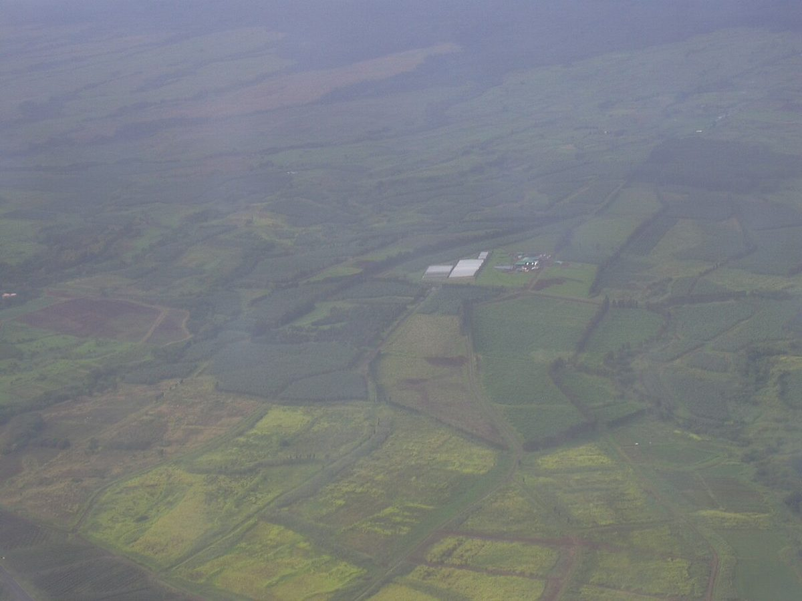
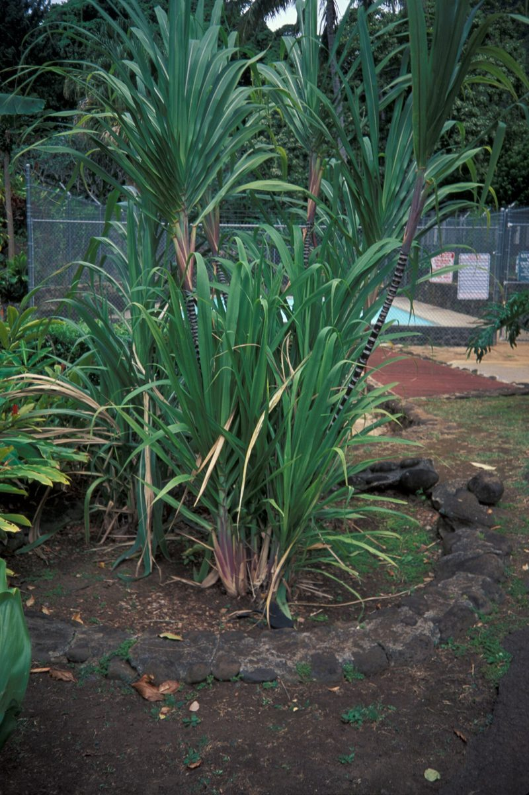

Saccharum officinarum
kō · sugarcane


Quick facts
| Family | Poaceae |
|---|---|
| Scientific name | Saccharum officinarum |
| Hawaiian name(s) | kō |
| English name(s) | sugarcane |
| Status | Polynesian introduction (canoe plant) |
| Conservation | — |
| Coastal zones | Valley mouth Riparian |
| Occurrence | Persistent remnants of pre-depopulation cultivation at Kalalau, Nuʻalolo Kai, and Miloliʻi valley bottoms and along the streams that reach the coast. Kō patches in these valleys are living records of the Hawaiian agricultural landscape that once occupied every wet Nā Pali valley — not naturalized wild grass, but cultivated clones outlasting their gardeners. |
How to identify
- Growth form
- Very tall, stout, upright clumping perennial grass — a giant grass that reads at first glance as a slender bamboo. Forms dense clumps from spreading rhizomes.
- Size
- 2–5 m tall, occasionally taller on rich sites.
- Leaves
- Long broad linear leaves 60–150 × 4–8 cm, arching outward from the stem nodes, with a distinct pale midrib and finely serrate edges (they can cut skin — see hazards). Leaf sheath wraps the stem.
- Flowers
- Large plumose (feather-like) terminal panicle 30–60 cm long, silvery-white to pale purple; produced only in some seasons and by some cultivars.
- Fruit / seed
- Small dry caryopsis (grass grain), rarely seen — Hawaiian sugarcane is propagated almost entirely vegetatively from stem cuttings.
- Bark / stem
- Stout jointed canes 2–5 cm thick, with clearly visible nodes and internodes. Cane colour varies by cultivar from green to yellow to deep purple-red; some cultivars are striped. Internal tissue is sweet, fibrous, and juicy.
- Where it sits on the coast
- Valley bottoms and stream margins at Nā Pali valley mouths; almost always on ground that once held a Hawaiian garden.
Clinchers (features that lock the ID)
- Very tall stout jointed cane with visible nodes — a grass 2–5 m tall.
- Long broad arching leaves 60–150 cm with a pale midrib.
- Silvery-white plumose panicle when flowering.
- Cane interior is sweet — but taste-checking a plant is not appropriate at a wahi pana site; go by the cane structure.
Look-alikes
- Native and introduced *Miscanthus* spp. (Pacific Island canes) — *Miscanthus* stems are much thinner (typically <1 cm), not sweet, and rarely reach 3 m; the leaves are narrower and the panicle is looser. If the cane is finger-thick or less, it is not kō.
- Invasive giant grasses (*Pennisetum purpureum*, napier grass) — Napier grass is a large lowland invasive but its stems are more slender and less clearly jointed, and it usually forms coarser thicket-style stands rather than the upright clumped growth of cultivated kō. The panicle of napier grass is bottlebrush-shaped, not the wide plumose panicle of kō.
- Young bamboo (*Bambusa* etc., naturalized) — Bamboo has woody culms with hollow internodes and paired branches at nodes. Kō has solid pithy sweet stems and single leaves at each node. Bamboo is not a coastal-Nā-Pali plant.
Ecology
Cultivated grass of tropical origin, spread across the Pacific by Polynesian voyagers who carried many named cultivars. On the unpopulated Kauaʻi coast today, kō persists vegetatively from historical plantings, sometimes forming large clumps in valley bottoms that have not been actively tended for a century or more. [1], [2], [39], [40], [41]
Cultural significance
Handy & Handy 1972 and Krauss 1993 record many pre-contact Hawaiian kō cultivars, named by stem colour, sweetness, joint pattern, and specific use (medicinal, food, ceremonial). Some cultivars had restricted use classes. Kō was integrated with the kalo loʻi complex and grown in dedicated patches and on paths. This guide names those relationships; the transmission of cultivar knowledge and use belongs to Hawaiian cultural practitioners, and to ongoing Hawaiian cultivar-conservation efforts.